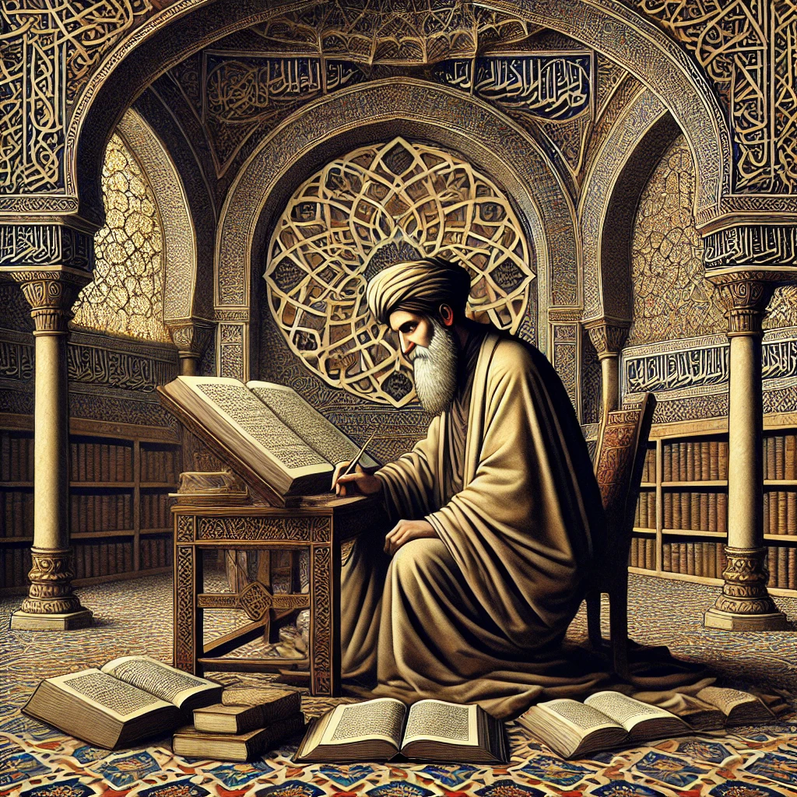

Corrientes Filosóficas Medievales
Patrística
siglos I - VIII
- Desarrollada por los primeros Padres de la Iglesia.
- Desarrollada por los primeros Padres de la Iglesia.
- Filósofos principales: San Agustín de Hipona, Orígenes, Tertuliano.
- Ideas clave: Dios es la fuente de la verdad, el conocimiento se obtiene por la fe y la razón.
×
Tomás de Aquino (1225-1274)
Obras principales:
- Summa Theologiae
- Summa contra Gentiles
Escolástica
Siglos IX - XV
- Sistema filosófico-teológico basado en la lógica y el método aristotélico.
- Intentó armonizar la razón con la fe cristiana.
- Filósofos principales: Santo Tomás de Aquino, San Anselmo, Pedro Abelardo.
- Ideas clave: La razón y la fe no se contradicen; Dios puede ser conocido a través de la lógica y la teología natural.
×
Maestro Eckhart (1260-1328)
Obras principales:
- Tratados y sermones
- El libro del consuelo divino
Filosofía judía e islámica medieval
Siglos IX - XV
- Intelectuales judíos y musulmanes influyeron en la filosofía medieval cristiana.
- Filósofos principales: Maimónides (judaísmo), Al-Farabí y Avicena (islam).
- Ideas clave: Dios es la causa primera, la razón y la fe pueden coexistir.
×

Maestro Eckhart (1260-1328)
Obras principales:
- Tratados y sermones
- El libro del consuelo divino
Misticismo medieval
siglos XIII - XIV
- Enfatizaba la experiencia directa con Dios a través de la contemplación y la espiritualidad.
- Filósofos principales: Meister Eckhart, Santa Teresa de Ávila, San Juan de la Cruz.
- Ideas clave: La unión con Dios se alcanza por el amor y la meditación, más que por la razón.
×

Maestro Eckhart (1260-1328)
Obras principales:
- Tratados y sermones
- El libro del consuelo divino
Averroísmo latino
siglos XII - XIII
- Inspirado en las ideas del filósofo musulmán Averroes.
- Defendía la "doble verdad": la razón y la fe pueden llegar a conclusiones diferentes sin ser contradictorias.
- Filósofos principales: Averroes, Siger de Brabante.
- Ideas clave: El intelecto es universal y separado de las almas individuales.
×

Tomás de Aquino (1225-1274)
Obras principales:
- Summa Theologiae
- Summa contra Gentiles